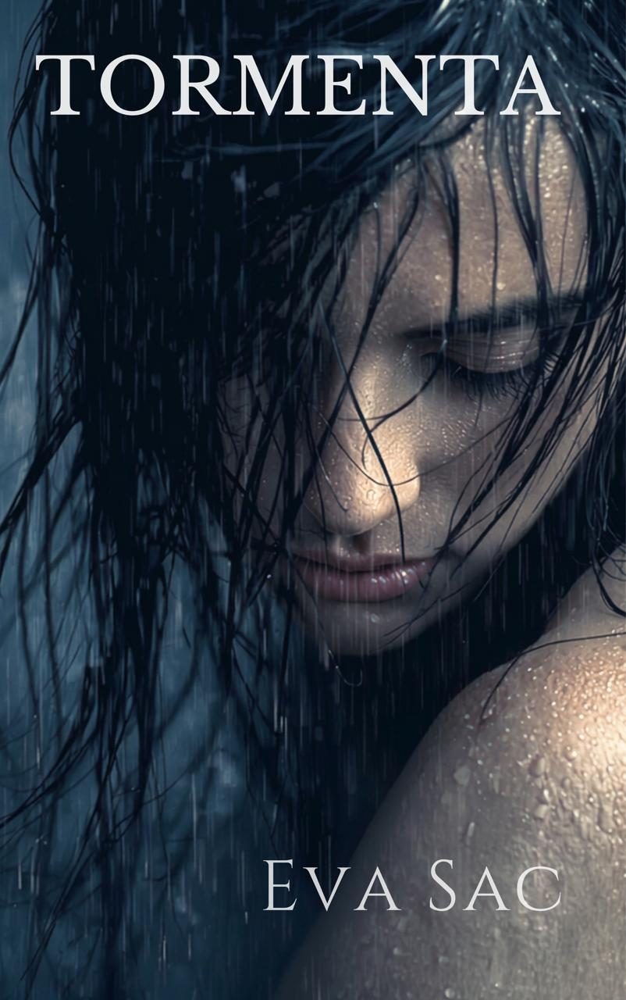
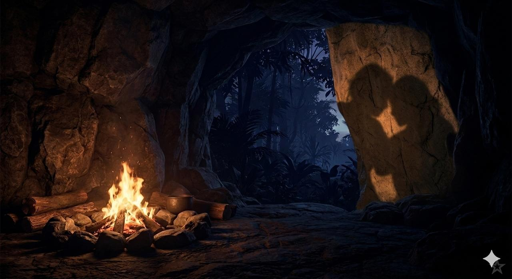

Tormenta
Frente al mar, observaba el oleaje, el infinito océano. Poderoso infinito. Me perdía a lo
lejos, donde
el cielo y el mar se unen en una fina línea casi invisible. El cielo era un cuadro: nubes oscuras
avisando la tormenta que estaba al llegar, rayos naranjas partiendo las nubes y unas estelas rosas
apoderándose del horizonte. Estaba casi desnuda, sentada en la arena; miraba los granos de arena
pegados a mi piel. Con la yema de los dedos limpiaba los contornos de las líneas tatuadas en mi
piel. Historia de mi vida, recordatorio, talismán, guerrera. Anclada en el momento presente, sentía
una calma casi eufórica. Contemplación, introspección, lista para brillar y deslumbrar.
Playa desierta; no sabía ni cómo había llegado allí. Paraíso sin descubrir, arena blanca, palmeras,
rocas; la selva densa desembocaba sobre una cala. Un paréntesis en mitad del universo. Mi mirada
se perdía en el movimiento de las olas y los destellos de luz, reflejo de un fuego que me
hipnotizaba.
Sentí una energía, una fuerza que atraía mi mirada: no estaba sola. La vi acercarse sin poder apartar
la mirada. El mundo dejó de girar. Todo se paró en ese instante. Hasta me olvidé de respirar.
Sus pasos eran ligeros pero firmes. Su tez blanca, deslumbrante como su mirada, y su pelo moreno
caía como olas en sus hombros; se movía a cámara lenta. La dejé acercarse; tampoco hubiese sabido
moverme. Dispuesta a rendirme antes de empezar la batalla; inútil luchar frente a tanta fuerza. No
fue rendición, sino aceptación. Agradecida, sabía que a aquella diosa la habían enviado para mí.
Sabéis ese momento donde nada gira, todo se para: la tormenta, el vaivén de las olas, hasta el
atardecer. Como si el universo pusiese todo en pausa para ti. Para que puedas apreciar lo que viene,
lo puedas escuchar, lo puedas ver, lo puedas sentir. ¿Y cuántas veces no lo hemos escuchado? Lo
escuché, me deleité de ese preciso instante, con la plena consciencia de lo que podía ocurrir. A
sabiendas de que todo podía pararse en un instante, esfumarse, disolverse y parecer o incluso ser
irreal. Por eso agarré ese instante y no lo solté, para hacerlo mío.
Para hacerla mía.
Llevaba un vestido de esos con tirantes muy finos, largo, bohemio, muy suelto, pero dejaba adivinar
todas sus curvas. Sus hombros descubiertos eran una pura tentación. Se acercaba cada vez más.
Nuestras miradas se cruzaron; tenía ese brillo, el que viene después de la tormenta. En esa mirada
había fuerza, valentía y dulzura. Y mucho más.
Le sonreí, ¿qué más podía hacer? Como una invitación a quedarse a contemplar el atardecer juntas.
Ella me respondió con una sonrisa cómplice:
— «¿Puedo disfrutar el atardecer contigo?».
— «Sí, por favor».
Y sin más, se sentó a mi lado. Habitamos el silencio. El universo había vuelto a soltar el reloj, el sol
seguía cayendo. No hicieron falta más palabras. En ese momento cualquier palabra hubiese sido una
ofensa. El silencio no era un vacío, sino una presencia compartida.
De repente sentí el calor emanar de su piel, rozar la mía. No me había dado cuenta de que
estábamos tan cerca. Y a pesar de mi casi total desnudez, me sentía a salvo. Con un movimiento casi
ensayado, nuestras manos se fueron acercando. Hasta encontrarse. Una ola de calor silenciosa
recorrió nuestros cuerpos; una mirada furtiva, contrato tácito para no romper ese silencio, y
volvieron a perder nuestras miradas en el horizonte.
La tormenta se acercaba, sentimos unas gotas caer en nuestros hombros al mismo tiempo que el sol
se iba despidiendo. Nuestras manos no habían parado de acariciarse, leyéndose con una curiosidad
que rozaba lo eléctrico; era una lectura excitante y, al mismo tiempo, cargada de un reconocimiento
ancestral. Era como recordar un mapa que nunca había transitado.
Sus dedos, curiosos, abandonaron los míos para iniciar un viaje lento por mi brazo. No era un toque
apresurado, era una lectura. Seguía con una precisión casi religiosa el contorno de mis tatuajes,
como si al acariciar la tinta pudiera descifrar cada uno de mis secretos. Cada roce despertaba en mí
un escalofrío que no tenía nada que ver con la brisa marina, y sí con el magnetismo que emanaba de
ella.
Me giré, un movimiento casi imperceptible, lo justo para encontrarme con su cuello, una extensión
de piel blanca que parecía brillar bajo los últimos rayos del sol. Casi llamando a la luna a brillar. El
deseo no llegó como una explosión, sino como la marea: subiendo despacio, constante, inevitable.
— «Tus marcas cuentan historias que quiero conocer», susurró, y su voz vibró directamente contra
mi piel.
Me acerqué, eliminando el último suspiro de aire que nos separaba. Buscando su calor, sentí la
suavidad de su vestido bohemio contra mis piernas desnudas; una tela tan fina que parecía una
caricia líquida. Mis manos, todavía impregnadas del salitre, buscaron sus hombros descubiertos.
Estaban todavía calientes por el sol, a pesar de los caminos húmedos que unas cuantas gotas
atrevidas habían dibujado bajando por debajo de su vestido. Paseé entre sus hombros y su cuello
con la calma y la delicadeza dignas de un ritual.
Bajo mis dedos sentí el latido acelerado de su corazón.
Ya no mirábamos el mar. El infinito ahora estaba en la profundidad de nuestras miradas. Con una
lentitud que dolía, incliné mi cabeza hasta que mi nariz rozó la suya, respirando su aroma a
tormenta y frutas exóticas; casi podía saborearlas: dulces, jugosas y frescas. El contrato tácito de
silencio se selló cuando mis labios, sedientos y hambrientos, rozaron los suyos por primera vez.
No hubo un gran viaje, ni una explosión, nada de big bang. Nos reconocimos mucho más allá de lo
que podíamos entender. Era inevitable. Un camino ya marcado. Llámalo destino. Éramos polvo de
estrellas bailando al compás. Llegando a casa después de un viaje agotador.
Nuestros besos, la coreografía más intuitiva y sintonizada que nunca había ejecutado. Nuestras
caricias, la prueba de que nuestros cuerpos físicos cargan con la memoria del universo. De la nada
al todo. Calma eufórica al tener ese momento de plena conciencia de que lo que está ocurriendo es
trascendental. Es divino, es estar vibrando en la frecuencia que te conecta con todo lo que fuiste,
eres y serás. Es decir, todo. Y nada.
La memoria de nuestras pieles nos incitaba a redescubrirnos más y más; un bucle embriagador,
nuestros labios rozándose, juntándose, mordiéndose. Nuestras lenguas impacientes encontrándose
una y otra vez. Nuestras manos viajando por todos nuestros cuerpos. Inevitable. Su cuerpo bajo mis
manos; la sentía y la veía, me sonreía.
Mi diosa. Ahora la veo. No había prisa; desnudarnos el alma y el cuerpo iba a ser un ritual lento,
una ceremonia de fuego y calma donde el tiempo ya no existía. Entre besos, caricias y miradas
cómplices, veía su sonrisa dibujarse; me perdía en su boca deslumbrante tanto como en su mirada.
El universo seguía girando, aunque estuviéramos totalmente ajenas a lo que ocurría a nuestro
alrededor. Así, no nos dimos cuenta de que el sol ya había desaparecido en el horizonte y de que los
colores del cielo se habían intensificado. Pinceladas de rojo, naranja, rosa, violeta y gris...
Estábamos delante de un cuadro tan maravilloso como efímero. Luego llegarían las estrellas.
Aunque fuéramos conscientes de la belleza del cuadro, y quizás por eso mismo, nos seguíamos
perdiendo en la mirada de la otra, en su piel, su historia y su boca.
Las caricias se intensificaban con una lentitud que rozaba la tortura. Nuestras respiraciones se
hacían cada segundo más entrecortadas; no era falta de aire, era el peso de una tensión que ya no
podíamos contener.
Y, como si no pudiera ser de otra manera, la tormenta estalló. Las gotas habían seguido su caída
discreta y juguetona, pero de repente vimos un destello romper el cielo, seguido de un trueno
ensordecedor. El viento empezó a soplar más fuerte y las nubes oscuras ganaron terreno sobre
nuestro cuadro de colores. Las gotas ya no eran sutiles.
Nuestras risas habitaron el cuadro entero. Retumbaron en el cielo como si fueran el eco burlón del
trueno. Ya nos habíamos levantado: cuerpos abrazados, pieles mojadas, listas para bailar bajo la
lluvia. De repente, ella le da la espalda al mar y a los rayos que ya se apoderaban del cielo, mira
hacia el bosque, me mira, me tiende la mano y me dice:
— «Ven conmigo».
No era una orden, sino una invitación. Y sin duda la acepté. Le agarré la mano, grabando esa
imagen en mi mente para siempre: su pelo moreno mojado cayendo sobre sus hombros, ese vestido
ya pegado a su piel dibujando con osadía todas sus curvas, sus pezones erizados debajo de la tela
mojada, y sobre todo, su mirada y su sonrisa pícaras iluminando no el cuadro, sino el universo
entero. Ella entera se había vuelto ahora el cuadro, la obra que quería admirar y disfrutar sin fin. No
quería romper ese instante. Pura magia.
Íbamos caminando, dejando atrás esa playa, ese cuadro y esa tormenta, con un sabor a nostalgia.
Las tormentas siempre me han hipnotizado. La seguí. Por muy vertiginoso que pudiera parecer, y
tan surrealista. Sabía que había llegado la hora de abandonar la tormenta. La belleza del caos.
Ella iba caminando por el bosque como si estuviera en el jardín trasero de su casa… conocía cada
centímetro cuadrado de aquel escenario salvaje. No me soltó la mano y, de vez en cuando, me
miraba con una ternura y una calma que no dejaban lugar al miedo. El deseo tiraba de nosotras con
una fuerza salvaje, pero obligábamos a nuestros pasos a mantener una lentitud deliberada. No
hablamos. Las palabras hubiesen sobrado. Se escuchaba la lluvia en las hojas de la vegetación muy
densa, el crujido de las ramas y de las hojas bajo nuestros pasos firmes, y también la vida silvestre
que se iba escondiendo a nuestro alrededor.
No sentía miedo, pero sí vértigo; como cuando estás a punto de saltar, dejando esa tierra firme que
ya conoces. No sé cuánto tiempo estuvimos moviéndonos entre árboles, rocas y plantas… perdí la
noción del tiempo.
Y de repente, los árboles dieron paso a una pared de roca imponente. Frente a nosotras se abría un
arco oscuro, una grieta en la piedra que parecía la entrada a otro mundo, o a lo más profundo de mí
misma. Ella se detuvo y me miró:
— «Ya hemos llegado».
Miré el hueco sin comprender del todo. Estábamos en el umbral de una cueva. Su oscuridad era
densa, pesada, de esas que intimidan porque te devuelven la mirada. Sentí un escalofrío: no sabía si
quería cruzar ese umbral o regresar a la tormenta que ya conocía. Pero estaba decidida a mirar lo
que había dentro de esa oscuridad. Yo ya me había metido en muchas cuevas a oscuras, sabía que
podía hacerlo, pero ese día la diferencia es que la sentía a ella. Como un ancla a ese preciso instante,
el único que importa, el presente, donde todo está bien y donde no hay ningún peligro. Un puerto
seguro a pesar de la oscuridad.
Juntas nos abrimos paso y entramos. Para mi gran sorpresa (y no la suya), había los vestigios de un
fuego ya apagado. Me indicó que un poco más adentro iba a poder encontrar ramas secas; ella juntó
algunas hojas. Después, se dirigió a un hueco muy pequeño en la pared y sacó de allí una caja de
cerillas envuelta en un trozo de tela vieja para protegerla de la humedad de la selva. Volvió hacia el
montículo de ramas, cenizas y hojas, rodeado por un círculo casi perfecto de piedras, y con
delicadeza, pero con gestos muy seguros, encendió el fuego. Al principio pareció arder fuerte, luego
se calmó, casi se apagó; ella, como en un ritual que ya hubiera hecho mil veces, lo cuidó hasta
dejarlo totalmente encendido.
Yo la observaba maravillada. ¿Y si de verdad fuese una diosa? Su belleza no dejaba de subyugarme
y su luz tenía un magnetismo al cual no pensaba ni por un segundo resistirme. Todo me parecía tan
surrealista, pero tan obvio. Inevitable. Era el lugar correcto y el momento perfecto.
Nuestras sombras empezaron a bailar, temblorosas, en las paredes de esta cueva, refugio de la
madre tierra. Como el reflejo de nuestras almas y de sus sombras más oscuras. Éramos dos, y las
sombras bailando parecían miles. Cuántas mujeres y niñas podían caber en un solo cuerpo. Nuestras
miradas cómplices nos dejaron el tiempo necesario para abrazar el instante.
Y nos acercamos de nuevo.
Busqué su mano para acariciarla y subir por su brazo hasta llegar al tirante de su vestido, que caía
por su hombro. Mi intención claramente no era colocarlo. Jugueteé con él y seguí mi camino hacia
su hombro; quería dibujar cada recoveco. Me perdí en su clavícula, sin saber si subir por su cuello o
bajar por los encajes del vestido hacia sus pechos.
Sentí su mano en mi cintura. Nuestros cuerpos estaban totalmente pegados; nos abrazamos. Dos
piezas de un puzle diseñadas la una para la otra. Nos quedamos en ese abrazo que abarcaba tanto la
luz como las sombras. Se sentía como el hogar anhelado.
Pero en esa calma profunda no dejaba de crecer el deseo. Le besé el cuello, suave. Su mano subía
por mi espalda hasta llegar a mi cuello, dejando sus dedos hundirse en mi pelo con firmeza. Mi
suspiro fue una invitación a seguir. Su respiración se entrecortaba. Nos besamos; al principio lento,
casi como unas caricias, pero poco a poco nuestros labios y nuestras lenguas sintieron una urgencia
incontrolable. Nos miramos a los ojos. Su mirada gritaba: «Te quiero hacer mía». La sentencia más
rica. Y, sin duda, mi ser entero gritaba: «Quiero ser tuya».
Su «quiero hacerte mía» era un grito de deseo; no un reclamo y, menos aún, unas cadenas. Y mi
«soy tuya» era una entrega consciente a unos brazos que arroparían mi alma y, sin duda, harían
temblar mi cuerpo de placer. Al final, la posesión y la rendición, cuando nacen desde lo más puro y
profundo, no son más que conexión, cuidado, confianza y placer.
Sin palabras más allá de un: — «¿Puedo?». — «Por supuesto».
Dejamos caer los últimos escudos que nos quedaban, ya no había fronteras, ni miedo, ni pasado;
solo el abismo bendito de una entrega que ardía por comenzar. Volví a sus hombros para agarrar los
tirantes y hacerlos caer definitivamente. La tela cayó con una ligereza celestial, dejando ver, a la luz
cálida del fuego, el contorno delicado de sus pechos y sus pezones erizados. Dejó también al
descubierto las líneas de su abdomen y de su cintura esculpida, sus caderas y sus piernas de diosa.
Pude ver las líneas de sus historias grabadas con tinta. No llevaba nada debajo del vestido. Y mi
mirada no pudo evitar posarse en su sexo. Deseaba recorrer cada poro de su piel y saborearla sin
límite. Estuve admirando su desnudez como quien contempla una obra de arte en un santuario.
Dio un paso hacia delante, dejando su vestido en el suelo, y me despojó de la tela que apenas tapaba
mi cuerpo. Después de la contemplación, vino la urgencia de sentir nuestras pieles fundirse; de
recorrer nuestros cuerpos, esos mapas nunca transitados pero que conocíamos a la perfección.
El calor del fuego se sumaba al incendio que nos devoraba por dentro. Buscamos la frescura de la
roca. Sin apenas despegarme de ella, la hice girar y apoyar sus manos contra las paredes húmedas
de nuestro refugio para poder dibujar las curvas de su espalda y de sus nalgas. A pesar del deseo,
nuestro baile estaba marcado por una lentitud divina, una tortura exquisita. Me puse a buscar las
líneas y los contornos de la tinta para besarlos con dulzura.
Mi mano subió a su cuello y se perdió en su melena todavía húmeda por la lluvia. La agarré con
suavidad; ella suspiró y su cuerpo se arqueó aún más, buscando mis caderas. Me pegué a ella,
sintiendo cómo sus nalgas encajaban a la perfección contra mis caderas y mi sexo. Una de mis
manos seguía en su pelo y la otra agarraba su cintura. Con una ligera presión, le pedí que girara la
cabeza para verle el rostro. Se veía tan bella, tan sensual y empoderada. Sin duda, entregarse no es
perder el poder, es reclamarlo.
Su mirada era una mezcla de rendición y de súplica, el ruego por un placer que sabía que nos
íbamos a regalar. Sin dejar de perdernos en nuestras miradas y bocas llenas de deseo —pasando de
una sonrisa que reflejaba la plenitud del momento a unos labios entreabiertos que dejaban escapar
suspiros hambrientos—, empezamos a movernos.
El movimiento se volvió instinto puro. Con las manos firmes en su cintura, la atraje contra mí con
más fuerza, rompiendo cualquier distancia. Cada embestida de nuestras caderas era una ola
rompiendo en la roca: constante, inevitable, pesada de deseo. Su piel húmeda, sus nalgas y la
curvatura de su espalda arqueada eran las mejores vistas del universo. Mientras le acariciaba la
espalda con fuerza, sentía nuestro fuego intensificarse.
Cogiéndome por sorpresa, se volteó, pegándose a mí. Sentir sus pechos contra los míos fue una ola
de puro placer que hizo vibrar mi cuerpo entero, tan eléctrico como la tormenta que rugía fuera.
Nuestros cuerpos, incapaces de separarse mientras nos devorábamos la boca, se movían por un
impulso salvaje. Mientras sus manos agarraban mis nalgas con fuerza, mantuve una mano en la
curvatura de su espalda y la otra subió a su cuello, para después emprender un viaje por sus senos,
su vientre, su cintura, sus muslos, y volver a subir a su bajo vientre, rodeando deliberadamente su
sexo. Buscando una mirada de aprobación, me encontré con unos ojos que me gritaban: «Sigue, por
favor».
Dejé mi mano cubrir su sexo, presionándolo, y empecé a acariciarlo con la yema de los dedos, en
una lectura ancestral, observando cómo echaba la cabeza hacia atrás, con su melena cayendo, sus
ojos cerrados, su boca entreabierta y sus gemidos vibrantes. Cuando entré en contacto con el calor
de su humedad, mi cuerpo entero tembló; mi respiración se volvió animal y mi mirada era puro
fuego.
Quería sentirla entera. Seguí acariciando y presionando su clítoris, pero ya no nos podíamos resistir;
sus movimientos denotaban la misma urgencia que me llevó a adentrarme en ella. Con velocidad,
con cuidado y con una pausa para ver lo divina que se veía. Su gemido retumbó en la cueva como
música sagrada; se quedó sin aire, mirándome a los ojos y buscando mi boca, hasta que empezó a
moverse de nuevo, buscando su placer y excitándome más con cada empuje. A cada segundo más
húmeda, el ritmo se aceleraba. Se aferraba a mi cuerpo; de repente pausó el baile, dejándome
atrapada dentro de ella. Dulce condena.
Dejó una mano en mi espalda para sujetarse con mi firmeza, la otra, decidida, fue al encuentro de
mis pechos; llenando su palma y apretando con fuerza, se los llevó a la boca mientras me clavaba
una mirada lujuriosa. Si nos quedaba algo de control, se fue perdiendo entre las sombras de la cueva
y las luces de la hoguera.
Sus dedos viajaron de mi espalda a mi cintura y bajaron por mi vientre hasta llegar a mi sexo. Lo
encontró ardiendo, gritándole que entrara. Al sentirla penetrándome, el suelo se derrumbó bajo mis
pies. Lo único que me mantenía todavía allí era su mirada profunda. Durante unos instantes, ni la
tormenta rugía, ni el fuego crepitaba; ni siquiera podíamos respirar. Nuestros latidos se pausaron.
Antes de caer en un trance fuera de todo control.
Caí de rodillas delante de su cuerpo espléndido; no podía ni quería esperar más para saborearla.
Mientras mis manos subían por sus piernas, mi boca, sin pedir permiso, ya se había llenado con su
sexo, deleitándome con su esencia más íntima. Ella buscaba apoyarse en la roca, clavando sus uñas
en las paredes húmedas y en mi piel.
Nuestro baile se volvió caótico, animal, primitivo. Nos movíamos sin freno, mezclando gemidos y
jadeos en el aire espeso de la cueva. Con la fricción, nuestras pieles sudadas resbalaban,
cubriéndose con el polvo y la tierra del suelo hasta hacernos parecer dos guerreras pintadas para la
batalla. Las marcas de ceniza y los arañazos del deseo recorrían nuestras espaldas, brazos y muslos,
dibujando bajo la luz de la hoguera un lienzo de pura intensidad salvaje. No era una guerra de
destrucción, sino de conquista mutua; un combate sagrado donde los cuerpos sedientos se
entregaban hasta desgarrarse.
Todo se volvía urgente: besarla, penetrarla, comerla, tenerla dentro de mí, muy adentro, en lo más
profundo de mi ser, tanto como sentir mi sexo en su boca. Nuestras embestidas salvajes no tenían
fin. No quería que tuviera final. El trance frenético en el que estábamos nos hacía expandirnos más
allá de nuestros propios límites, disolviendo las fronteras de la piel. Nada hubiese podido detener a
esas dos diosas bailando en su cueva, en ese santuario de piedra donde la lujuria, el instinto animal,
lo sensual y lo sexual volvían a ser la esencia. Aquello ya no era solo un encuentro: era nuestra
única forma de expresión; una catarsis absoluta y liberadora.
Revolcada en el suelo con nuestros cuerpos entrelazados —mi cabeza en su entrepierna, sus muslos
rodeándome, uno de sus senos en mi mano y mis dedos en su interior—, me deleitaba dejando mi
boca llenarse y mi lengua traviesa jugar con su clítoris. El más rico manjar. Sentía cómo su cuerpo
se iba tensando cada vez más; mi excitación se intensificaba, como si eso fuera aún posible. Era el
anuncio de un clímax a punto de llegar. Me dejé guiar por su cuerpo y por sus gemidos; escuchando
cada movimiento suyo, ella llevaba el baile y yo la seguía. Le clavé mi mirada sin soltar su
delicioso sexo. Y seguí, seguí, seguí... Ella se quedó sin aire y su cuerpo entero empezó a vibrar, a
sacudirse. Se arqueó, se retorció, sus gemidos se volvieron gritos, y sentí cómo se corría en mi boca.
Era delicioso, caliente, jodidamente sabroso; verla entregarse mientras me llenaba el paladar me
excitó hasta hacerme perder la razón.
Qué belleza la unión de los cuerpos; cómo las almas bailan fuera de su envoltura carnal, dejando
para siempre una conexión cósmica.
Con su cuerpo todavía tembloroso, me hizo voltear con sus muslos y se subió encima; abrió mis
piernas y se colocó de tal manera que su sexo abierto se rozara plenamente con el mío. Al ver la
imagen de esa diosa cabalgándome de aquella forma, en esa cueva y ante ese fuego, no sabía qué
me excitaba más: si el contacto de nuestros sexos ardientes o su sensualidad extrema. Sus gemidos
se intensificaban de nuevo. El ritmo era suave, pausado, lírico. Mi goce era absoluto. Y de nuevo su
cuerpo se arqueó más y más; su rostro al llegar al orgasmo fue un poema tan salvaje y prohibido
que quise grabarlo en mi mente para siempre.
Dejó caer su cuerpo encima del mío. Sentía nuestros latidos como el eco de unos tambores
frenéticos, pero nuestros cuerpos estaban totalmente quietos. Empecé a acariciarle todo el cuerpo
mientras la abrazaba. Divina ternura. Aquello tenía una fuerza más devastadora que cualquier
batalla. Tenía, en su quietud, el poder de sanar todas nuestras heridas de guerra.
Como volviendo de un viaje a otra dimensión, levantó el rostro que se había fundido en mi cuello y
me besó la cara, los labios, la garganta... Fue bajando lentamente hasta detenerse en mis pechos; allí
los besos se transformaron poco a poco. Clavó delicadamente sus dientes en mis pezones y mis
gemidos la incitaron a seguir aumentando la presión. Mis caderas empezaron a moverse solas,
buscándola, reclamándola, rogándole. Escuchó mi súplica y siguió bajando hasta que su boca se
encontró con mi sexo. Mi entrega fue total. Su posesión; salvaje.
Mi cuerpo ya estaba al límite y ella lo sabía; buscó con agilidad el ritmo perfecto para llevarme al
clímax. La tormenta rugía afuera, o quizás era mi propio cuerpo a punto de estallar. Una descarga
eléctrica de puro placer comenzó en mi sexo para expandirse por cada célula de mi ser; ya no era
dueña de mí misma. Escuchaba mis gritos retumbar en la cueva como quien rompe sus cadenas y
salta hacia la libertad.
Mi trance se alargó hasta dejarme exhausta, y ella, todavía saboreándome en sus labios, subió para
acurrucarse conmigo. Nuestros latidos al compás por fin se iban calmando. Nuestros cuerpos
satisfechos seguían reclamando caricias infinitas.
Vulnerabilidad sanando al abrigo de la luz que nos envolvía.
Nuestras risas desafiaban la tormenta que ya se estaba alejando.
Ya podíamos vislumbrar las luces del amanecer.
- Eva Sac -
Registrado en Safe Creative con ID 2606025906075 bajo licencia CCA-BY-NC-ND 4.0.
